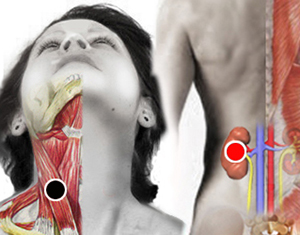

Estrés
Pares
esternocleidomastoideo - riñón
mediastino - cerebelo
tálamo - tálamo
pineal - hígado
cervical - lumbar

Generalidades:
Estrés es una castellanización de stress que en inglés significa presión. Es un síndrome que sufre gran cantidad de personas en la vida moderna a consecuencia de presiones laborales, sociales, familiares, objetivas o subjetivas. El estrés altera los ciclos circadianos y muchos otros sistemas del organismos impidiendo el descanso apropiado y provocando un mayor desgaste de todos los sistemas, siendo la causa de muchas otras enfermedades.